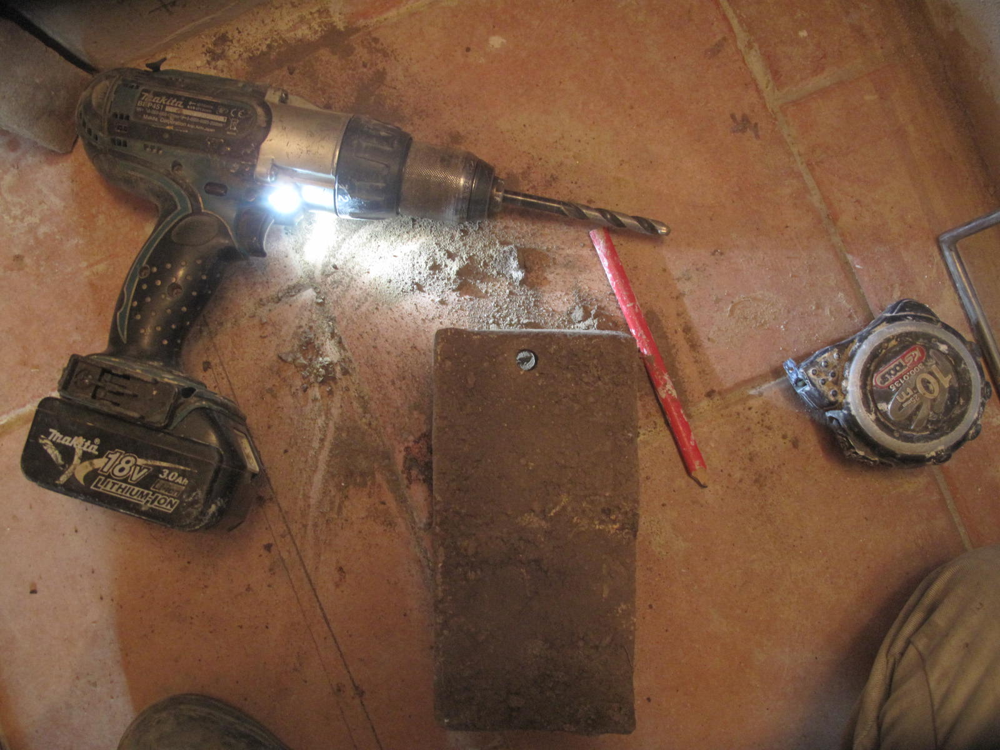

La fabrication d'adobes (briques de terre crue)
Plan
Introduction
Les adobes, encore appelées briques de terre crue, sont des briques de terre séchées sans cuisson dans un four. Traditionnellement, elles sont moulées à la main dans un moule en bois puis séchées à température ambiante. C'est une technique pluri-millénaire, enore utilisée aujourd'hui dans beaucoup d'endroits de part le monde.
Image : fresque datant de 3500 ans retrouvée en Égypte dans la tombe de Rekhmire et décrivant la fabrication d'adobes.Source : http://www.earth-auroville.com/maintenance/uploaded_pics/10-adobe-moulding-en.pdf.
Ces briques sont généralement utilisées pour de la maçonnerie générale, mais nous les utilisons pour la fabrication de poêles de masse. Elles peuvent être utilisées pour la première peau du poêle ou pour le coeur de chauffe, mais dans ce cas la durabilité du poêle sera moins importante qu'avec des briques classiques. Il faudra aussi faire très attention à sécher le poêle en douceur avant de l'utiliser à sa pleine puissance. Ces adobes peuvent aussi être utilisées sur la seconde peau ou pour des bancs de chauffe de poêles de masse : les températures sont moins élevées et dans ce cas les adobes y résistent sans problème.


Images : À gauche, adobes maçonnées pour la seconde peau; à droite, adobes utilisées pour un banc de chauffe.
Les moules
Les moules utilisés peuvent être en bois ou en métal. Pour des briques mieux dimensionnées et un moule plus résistant, il vaut mieux utiliser des moules en métal.
Images : moule en bois permettant de faire 3 adobes de 20 x 10 x 10 cm
Pour la fabrication des poêles de masse, nous utilisons principalement des adobes de 20 x 10 x 10 cm, appelées "savons" et des adobes de 20 x 10 x 5 cm, appelées "planelles".
Images : À gauche, moule en métal permettant de faire des savons; à droite, moule à planelles
La fabrication
La première étape consiste à trouver la juste proportion d'argile et de d'agrégats. La plupart du temps, la terre du jardin est une excellente base pour fabriquer des briques. Elle est souvent trop argileuse, ce qui oblige à ajouter du sable. Les proportions sont très variables en fonction du type de terre argileuse à disposition : dans le cas d'une terre "agricole", on peut partir sur des proportions de 1 à 2 parts de sable pour 5 parts de terre et dans le cas d'argile quasi-pure à 2 ou 3 parts de sable pour une part d'argile. L'idéal n'est pas de trouver une terre très argileuse, mais une terre qui présente déjà le bon ratio argile/sable.
La présence de petit graviers est bénéfique pour la solidité des briques. La taille maximale des graviers est d'environ 1/3 de la plus petite côte des adobes à mouler. Par exemple, pour fabriquer des adobes de 20 x 10 x 10 cm, on enlèvera tous les graviers dont le diamètre est supérieur à 3 cm. Pour cette raison, nous ne tamisons pas la terre que nous utilisons pour fabriquer des briques. Il faut simplement trouver une terre sans trop de cailloux et retirer à la main les graviers trop gros.
L'objectif est d'obtenir des briques qui ne fissurent pas au séchage et qui sont suffisamment argileuses pour que, lorsqu'on les frotte à la main, il n'y ait pas de sable qui s'effrite. Un mélange proportionnellement trop riche en argile aura tendance à fissurer tandis qu'un mélange trop sableux s'effritera et sera globalement moins solide.
La méthode de test est la suivante :
- Fabriquer un moule de test aux dimensions voulues.
- Dans un seau, mélanger énergiquement à la main ou à la truelle suffisament de terre et d'eau pour faire une brique. Il est plus facile de partir d'un mélange très liquide et d'y ajouter progressivement de la terre jusqu'à obtenir la consistance souhaitée. Le mélange doit être suffisament sec pour que la brique ne s'affaisse pas après le démoulage.
- Il faut maintenant mouler et numéroter la brique. Le moule doit être enlevé immédiatement après le moulage.
- Faire d'autres tests en variant à chaque fois le ratio terre argileuse/sable. On peut par exemple partir de 1 part de terre pour 1 part de sable, puis essayer 1 part de terre pour 2 de sable, etc.. L'idée est d'obtenir une brique solide, avec le plus fort taux d'argile possible et qui ne fissure pas.
- Laisser sécher au soleil où en intérieur s'il fait trop froid ou si le temps est humide.
-

- 
Images : Adobes suffisament solides pour être perçées à la mèche à béton.
Le processus de fabrication des adobes est le suivant :
- Mettre environ 5 L d'eau dans une bétonnière d'au moins 160L.
- Ajouter progressivement la terre et le sable tant que le mélange reste suffisament liquide pour bien se mélanger. Attendez quelques minutes, c'est très important. Les briques seront d'autant plus solides que l'argile aura pu s'hydrater et s'agglomérer.
- Compléter le mélange jusqu'à ce que des "crottins" de la taille d'un poing se forment spontanément dans la bétonnière. Ces crottins doivent être humides au toucher mais non salissants.
- En parallèle, mouillez les moules et saupoudrez l'intérieur de sciure pour éviter de déformer les briques lors du démoulage. Les moules doivent être posés sur un sol bien plat pour obtenir des briques de dimensions précises.
- Projeter avec force les crottins dans les moules. La compaction dynamique assurée par ce jet permet d'obtenir des briques plus denses et plus solides.
- Avec les pouces, enfoncer la terre dans les coins. Avec une truelle, lisser le dessus des futures briques en enlevant l'excès de matière.
- Démouler aussitôt les briques en faisant attention de ne pas les déformer. De petites secousses et de l'entrainement permettent un démoulage efficace. L'idéal est de travailler avec un mélange assez sec pour qu'il ne colle pas trop aux bords et que la brique ne "coule" pas une fois démoulée.
- Les adobes sont laissées à sécher à température ambiante pendant 1 à 5 jours, en fonction du temps. Elles sont ensuite entreposées à l'abri de la pluie.
Images : À gauche, lissage des briques; à droite, terre projetée dans un moule.
Un binôme sans expérience préalable et avec une condition physique raisonnable peut espérer fabriquer entre 150 et 200 briques une une journée avec la méthode décrite ici, en supposant que les matériaux et le matériel soient déjà en place. La même méthode sans bétonnière est utilisée en Amérique du Sud où certains travailleurs produisent jusqu'à 1000 briques par jour.
Contrairement à certains types de briques ou à de la bauge ou encore à du torchis, il n'est pas nécessaire de rajouter des fibres dans les briques. En effet, pour les poêles de masse, les briques de terre crue sont utilisées pour des efforts en compression uniquement parce que c'est un des points forts du matériau terre. Plutôt que de fabriquer et d'utiliser des linteaux qui sont sollicités en flexion, il est préférable de faire des voûtes comme par exemple des plates-bandes qui sollicitent principalement les matériaux en compression. Les variations de température font bouger les différents éléments des poêles et pour une durabilité optimale il vaut mieux utiliser les matériaux dans leurs points forts.
Photos
Diaporama. Cliquez sur les flèches pour faire défiler les photos.